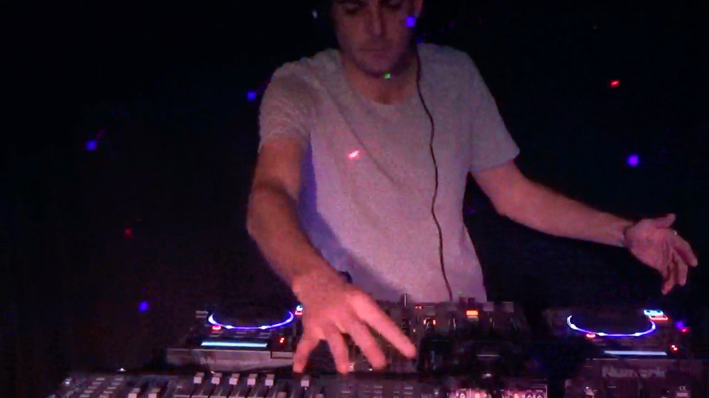
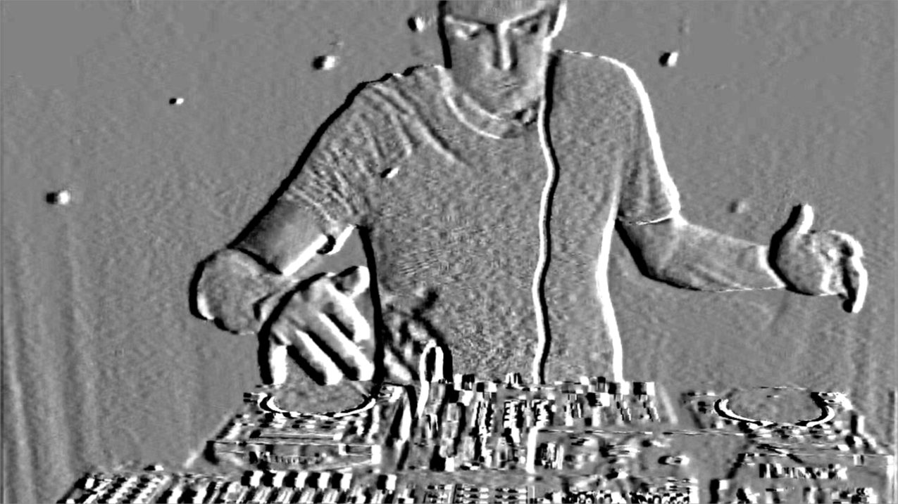

DJ Tacspace specialises in Electro-House mixed with a variety of other genres and styles with professional lighting displays. He also produces alot remixes as well as original music in the styles of Electro-House, Trance, and Trap mixed with a variety of songs from many genres.

Dj Tacspace is the artist nme of Michael Rasmussen. An Australian born November 13th 1983, and raised on a farm in the state of New South Wales. Learning piano from an early age music was always a huge part of his life. Performing and winning in eisteddfodds he progressed fast with a deep feeling for the music he was playing. At age 12 he taught himself guitar and begun writing music and performing in bands. During his twenties he travelled and performed as a Dj accross Australia building a small following. Eventually he progressed into producing dance music with a multitude of other artists, continuing to this day.
